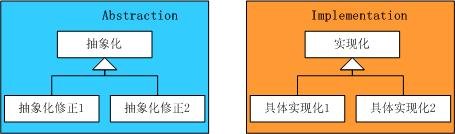

.NET设计模式（15）：结构型模式专题总结-good thought
——探索设计模式系列之十五
Terrylee，2006年5月
摘要：结构型模式，顾名思义讨论的是类和对象的结构，它采用继承机制来组合接口或实现（类结构型模式），或者通过组合一些对象，从而实现新的功能（对象结构型模式）。这些结构型模式，它们在某些方面具有很大的相似性，仔细推敲，侧重点却各有不同。本文试图对这几种结构型模式做一个简单的小结。
主要内容
1．结构型模式概述
2．结构型模式区别与比较
3．对变化的封装
结构型模式概述
结构型模式，顾名思义讨论的是类和对象的结构，它采用继承机制来组合接口或实现（类结构型模式），或者通过组合一些对象，从而实现新的功能（对象结构型模式）。这些结构型模式，它们在某些方面具有很大的相似性，仔细推敲，侧重点却各有不同。
Adapter模式通过类的继承或者对象的组合侧重于转换已有的接口；Bridge模式通过将抽象和实现相分离，让它们可以分别独立的变化，它强调的是系统沿着多个方向的变化；Decorator模式采用对象组合而非继承的手法，实现了在运行时动态的扩展对象功能的能力，它强调的是扩展接口；Composite模式模糊了简单元素和复杂元素的概念，它强调的是一种类层次式的结构；Façade 模式将复杂系统的内部子系统与客户程序之间的依赖解耦，它侧重于简化接口，更多的是一种架构模式；Flyweight模式解决的是由于大量的细粒度对象所造成的内存开销的问题，它与Façade模式恰好相反，关注的重点是细小的对象；Proxy模式为其他对象提供一种代理以控制对这个对象的访问，它注重于增加间接层来简化复杂的问题。
结构型模式区别与比较
1．桥接模式与装饰模式
这两个模式在一定程度上都是为了减少子类的数目，避免出现复杂的继承关系。但是它们解决的方法却各有不同，装饰模式把子类中比基类中多出来的部分放到单独的类里面，以适应新功能增加的需要，当我们把描述新功能的类封装到基类的对象里面时，就得到了所需要的子类对象，这些描述新功能的类通过组合可以实现很多的功能组合，装饰模式的简略图如下：
http://terrylee.cnblogs.com/images/cnblogs_com/terrylee/StructPattern_08.jpg
图1 装饰模式简略图
桥接模式则把原来的基类的实现化细节抽象出来，在构造到一个实现化的结构中，然后再把原来的基类改造成一个抽象化的等级结构，这样就可以实现系统在多个维度上的独立变化，桥接模式的简略图如下：
http://terrylee.cnblogs.com/images/cnblogs_com/terrylee/StructPattern_09.jpg
图2 桥接模式简略图
2．外观模式和代理模式
外观模式和代理模式解决问题的侧重点不同，但是它们解决问题的手法却是一样的，即都是引入了间接层的手法，这也是我们软件系统中经常用的一种手法。外观模式虽然侧重于简化接口，但是在某些情况下，外观模式也可以兼任代理模式的责任，例如外观对象有可能是另一个位于另一个地址空间对象的远程代理，这时候我们可以叫做外观代理模式，或者代理外观模式。它们的类简略图如下：
http://terrylee.cnblogs.com/images/cnblogs_com/terrylee/StructPattern_11.jpg
图3 代理模式简略图
http://terrylee.cnblogs.com/images/cnblogs_com/terrylee/StructPattern_10.jpg
图4 外观模式简略图
3．适配器模式
适配器模式重在转换接口，它能够使原本不能在一起工作的两个类一起工作，所以经常用在类库复用，代码迁移等方面，有一种亡羊补牢的味道。类适配器和对象适配器可以根据具体实际情况来选用，但一般情况建议使用对象适配器模式，如下图所示，左边是类适配器模式，右边是对象适配器模式：
http://terrylee.cnblogs.com/images/cnblogs_com/terrylee/StructPattern_12.jpg
图5 适配器模式简略图
对变化的封装
如何应对变化，是软件开发的一个永恒的主题，也许我们不能够杜绝变化的发生，但至少我们可以通过一些手段让变化降到最低。“找到系统可变的因素，将之封装起来”，通常就叫做对变化的封装。关于这个问题的解释在《Java与模式》中讲的很清晰，抽象化与实现化的简单实现，也就是“开-闭”原则在类层次上的最简单实现，如下图所示：
http://terrylee.cnblogs.com/images/cnblogs_com/terrylee/StructPattern_01.jpg
图6
在这个继承结构中，第一层是抽象化，它封装了抽象的业务逻辑，这是系统中不变的部分；第二层是实现化，它是具体的业务逻辑的实现，封装了系统中变化的部分，这个实现允许实现化角色多态性的变化：
http://terrylee.cnblogs.com/images/cnblogs_com/terrylee/StructPattern_02.jpg
图7
也就是说，客户端依赖的是业务逻辑的抽象化类型的对象，而与抽象化的具体实现无关，不在乎它到底是“实现化”，“实现化2”还是“实现化3”，如下图所示：
http://terrylee.cnblogs.com/images/cnblogs_com/terrylee/StructPattern_03.jpg
图8
每一种继承关系都封装了一个变化因素，而一个继承关系不应当处理两个变化因素，换言之，这种简单继承关系不能处理抽象化与实现化都变化的情况，如下图所示：
http://terrylee.cnblogs.com/images/cnblogs_com/terrylee/StructPattern_04.jpg
图9
上图中的两个变化因素应当是独立的，可以在不影响另一者的情况下独立的变化，如下面这两个等级结构分别封装了自己的变化因素，由于每一个变化因素都是可以通过静态关系表达的，因此分别使用继承关系实现，如下图：
 http://terrylee.cnblogs.com/images/cnblogs_com/terrylee/StructPattern_05.jpg
图10
在抽象化和实现化之间的联系怎么办呢？好的设计只有一个，不好的设计却有很多中，下面这种设计就是继续使用继承进行静态关系设计的类图：
http://terrylee.cnblogs.com/images/cnblogs_com/terrylee/StructPattern_06.jpg
图11
这样的设计其实存在着很多的问题，首先出现的是多重的继承关系，随着具体实现化的增多，子类的继承关系会变得异常复杂；其次如果出现新的抽象化修正或者新的具体实现角色，就只好重新修改现有系统中的静态关系，以适应新的角色，这就违背了开放-封闭原则。正确是设计应该是使用两个独立的等级结构封装两个独立的变化因素，并在它们之间使用聚合关系，以达到功能复用的目的，这就回到了我们的桥接模式上，如下图所示：
http://terrylee.cnblogs.com/images/cnblogs_com/terrylee/StructPattern_07.jpg
图12
从另一个角度讲，一个好的设计通常没有多于两层的继承等级结构，或者说，如果出现两个以上的变化因素，就需要找出哪一个因素是静态的，可以使用静态关系，哪一个是动态的，必须使用聚合关系。
更多的设计模式文章可以访问《.NET设计模式系列文章》
参考资料
Erich Gamma等，《设计模式：可复用面向对象软件的基础》，机械工业出版社
Robert C.Martin，《敏捷软件开发：原则、模式与实践》，清华大学出版社
阎宏，《Java与模式》，电子工业出版社
Alan Shalloway James R. Trott，《Design Patterns Explained》，中国电力出版社